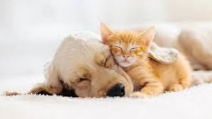
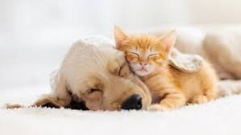

Somos un centro de adopción de mascotas dedicado a brindar un hogar seguro, lleno de amor y esperanza para perritos y gatitos que buscan una nueva oportunidad.
Rescatamos, cuidamos y promovemos la adopción responsable de animales en situación vulnerable.
Fomentar la empatía, el respeto y la adopción responsable mediante una plataforma confiable y cercana.